리눅스마스터-2급 (2023-09-09 기출문제)
1과목: 리눅스 운영 및 관리
1. project 그룹에 속한 사용자들이 /project 디렉터리에서 파일 생성은 자유로우나 삭제는 본인이 생성한 파일만 가능하도록 설정하려고 한다. /project 디렉터리의 정보가 다음과 같을 때 관련 명령으로 알맞은 것은?
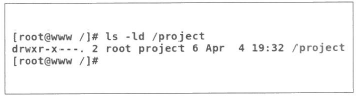
- chmod g+s /project
- chmod g+t /project
- chmod o+s /project
- chmod o+t /project
(정답률: 60%)

2. 다음 중 특수 권한을 부여해서 사용하는 경우의 예로 가장 거리가 먼 것은?
- Sticky-Bit를 파일에 부여한다.
- Set-UID를 실행 파일에 부여한다.
- Set-GID를 실행 파일에 부여한다.
- Set-GID를 디렉터리에 부여한다.
(정답률: 71%)
3. 다음 중 파일이나 디렉터리의 소유자를 확인하는 명령어로 알맞은 것은?
- ls
- chmod
- chown
- umask
(정답률: 78%)
4. 다음 중 생성된 a.txt의 허가권 값으로 알맞은 것은?
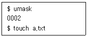
- -rw-rw-r--
- -rwxrwxr-x
- drw-rw-r--
- drwxrwxr-x
(정답률: 84%)
5. 다음 설명에 해당하는 명령어로 알맞은 것은?
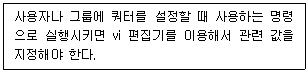
- quota
- edquota
- setquota
- xfs_quota
(정답률: 71%)
6. 다음 중 현재 마운트된 디스크의 남아있는 용량을 확인할 때 사용하는 명령어로 알맞은 것은?
- df
- du
- fdisk
- mount
(정답률: 76%)
7. 다음 결과에 대항하는 명령어로 알맞은 것은?
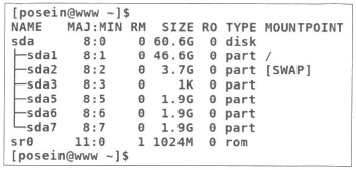
- lsblk
- blkid
- fdisk
- df
(정답률: 55%)
8. 다음 설명에 해당하는 파일명으로 알맞은 것은?
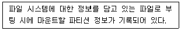
- /etc/fstab
- /etc/mtab
- /etc/mounts
- /etc/partitions
(정답률: 59%)
9. 다음 (괄호) 안에 들어갈 명령어로 알맞은 것은?
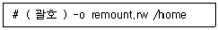
- quota
- mount
- umount
- fdisk
(정답률: 76%)
10. 다음은 /dev/sdb1을 XFS 파일 시스템으로 포맷하는 과정이다. (괄호)안에 들어갈 명령어로 알맞은 것은?
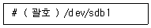
- xfs.mkfs
- mkfs.xfs
- mke2fs -j xfs
- mke2fs -t xfs
(정답률: 64%)
11. 다음 설명에 해당하는 셸로 알맞은 것은?
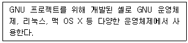
- bourne shell
- csh
- dash
- bash
(정답률: 78%)
12. 다음 (괄호) 안에 들어갈 파일명으로 알맞은 것은?
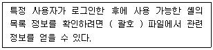
- /etc/passwd
- /etc/shells
- /etc/bashrc
- /etc/profile
(정답률: 64%)
13. 다음 명령의 결과에 대한 설명으로 가장 알맞은 것은?
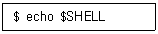
- 사용자가 로그인 시에 부여받은 셸 정보가 출력된다.
- 사용자가 현재 사용하고 있는 셸 정보가 출력된다.
- 사용자가 변경할 수 있는 셸 정보가 출력된다.
- 화면에 어떠한 결과도 출력되지 않는다.
(정답률: 53%)
14. 다음은 ihd 사용자가 다른 셸로 변경하는 과정이다. (괄호) 안에 들어갈 내용으로 알맞은 것은?
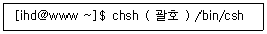
- -l
- -u
- -s
- -c
(정답률: 58%)
15. 다음 중 최근에 실행한 명령 중에 'al'이라는 문자열을 포함한 명령을 찾아서 실행하는 명령으로 알맞은 것은?
- !?al
- !!al
- !*al
- !-al
(정답률: 70%)
16. 다음 (괄호) 안에 들어갈 파일명으로 알맞은 것은?
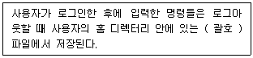
- bash_profile
- bash_history
- .bash_profile
- .bash_history
(정답률: 67%)
17. ls 명령으로 에일리어스(alias)가 설정된 상태에서 원래의 ls 명령어를 실행하려고 한다. 다음 중 관련 설명으로 알맞은 것은?
- ls 명령어 앞에 ! 기호를 덧붙여서 실행한다.
- ls 명령어 앞에 $ 기호를 덧붙여서 실행한다.
- ls 명령어 앞에 \ 기호를 덧붙여서 실행한다.
- ls 명령어 앞에 / 기호를 덧붙여서 실행한다.
(정답률: 56%)
18. 다음 (괄호) 안에 들어갈 내용으로 알맞은 것은?
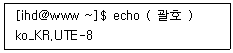
- $LANG
- $TERM
- $PS1
- $TMOUT
(정답률: 84%)
19. 다음 (괄호) 안에 들어갈 내용으로 알맞은 것은?
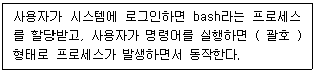
- exec
- fork
- init
- systemd
(정답률: 58%)
20. 다음 중 명령어를 백그라운드 프로세스로 실행하기 위한 방법으로 알맞은 것은?
- 실행 명령어 앞부분에 bg를 덧붙여서 실행한다.
- 실행 명령어 앞부분에 jobs를 덧붙여서 실행한다.
- 실행 명령어 뒷부분에 & 기호를 덧붙여서 실행한다.
- 실행 명령어 뒷부분에 bg를 덧붙여서 실행한다.
(정답률: 71%)
21. 다음 (괄호) 안에 들어갈 내용으로 알맞은 것은?
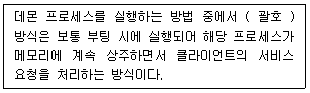
- init
- inetd
- xinetd
- standalone
(정답률: 80%)
22. 다음 중 kill 명령어를 실행할 때 전달되는 기본 시그널 명칭과 번호의 조합으로 알맞은 것은?
- SIGKILL, 9
- SIGKILL, 15
- SIGTERM, 9
- SIGTERM, 15
(정답률: 63%)
23. 다음 중 포어그라운드 프로세스를 백그라운드 프로세스로 전환하기 위해 사용하는 키 조합으로 알맞은 것은?
- [Ctrl] + [c]
- [Ctrl] + [a]
- [Ctrl] + [z]
- [Ctrl] + [d]
(정답률: 76%)
24. 다음 명령의 결과에 대한 설명으로 알맞은 것은?
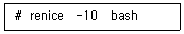
- bash 프로세스의 우선순위를 높인다.
- bash 프로세스의 우선순위를 낮춘다.
- bash 프로세스의 PRI 값을 -10으로 변경한다.
- 사용법 오류로 인해 실행되지 않는다.
(정답률: 53%)
25. cron을 이용해서 해당 스크립트를 매월 1일 오전 4시 2분에 주기적으로 실행하려고 한다. (괄호) 안에 들어갈 내용으로 알맞은 것은?
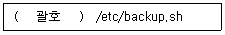
- 4 2 * * 1
- 2 4 * * 1
- 4 2 1 * *
- 2 4 1 * *
(정답률: 77%)
26. 다음은 프로세스 아이디가 513, 514, 515번인 프로세스를 종료시키는 과정이③ (괄호) 안에 들어갈 명령어로 알맞은 것은?
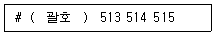
- kill
- pkill
- killall
- pgrep
(정답률: 70%)
27. 다음 그림에 해당하는 명령어로 알맞은 것은?
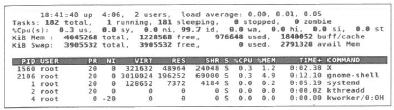
- ps
- top
- jobs
- pstree
(정답률: 67%)
28. 다음 설명에 해당하는 명령어로 알맞은 것은?
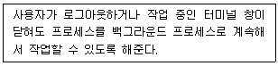
- bg
- jobs
- pgrep
- nohup
(정답률: 75%)
29. 다음 중 vi 편집기를 개발한 인물로 알맞은 것은?
- 빌 조이
- 리처드 스톨만
- 브람 브레나르
- 제임스 고슬링
(정답률: 84%)
30. 다음 중 기본 사용법이 동일한 편집기의 조합으로 알맞은 것은?
- vi, emacs
- pico, emacs
- pico, nano
- vi, pico
(정답률: 82%)
31. 다음 설명에 해당하는 편집기로 알맞은 것은?
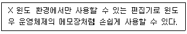
- nano
- gedit
- vim
- emacs
(정답률: 75%)
32. 다음 중 vi 편집기의 명령 모드에서 바로 직전에 삭제한 줄을 다시 복원하기 위해 실행하는 명령으로 알맞은 것은?
- c
- r
- u
- dd
(정답률: 55%)
33. 다음 중 vi 편집기에서 한 줄이 linux인 경우에만 전부 Linux로 치환하는 명령으로 알맞은 것은?
- :% s/^linux$/Linux/g
- :% s/linux/^Linux$/g
- :% s/\<linux\>/Linux/g
- :% s/linux/\<Linux\>/g
(정답률: 67%)
34. 다음 중 vi 편집기에서 행 번호가 표시되도록 하는 ex 모드 환경설정으로 알맞은 것은?
- set no
- set ai
- set sm
- set number
(정답률: 77%)
35. 다음 중 데비안 계열 리눅스에서 사용되는 패키지 관리 도구 모음으로 가장 알맞은 것은?
- YaST, zypper
- YaST, dpkg
- dpkg, apt-get
- dnf, zypper
(정답률: 80%)
36. 다음 중 리눅스에서 사용되는 온라인 패키지 관리 도구로 거리가 먼 것은?
- dnf
- dpkg
- zypper
- apt-get
(정답률: 61%)
37. 다음 중 Makefile 파일이 생성되는 소스 설치 단계로 알맞은 것은?
- configure
- make
- cmake
- make install
(정답률: 70%)
38. 다음 중 소스 설치 방법으로 cmake를 선택한 프로젝트로 틀린 것은?
- MySQL
- PHP
- KDE
- LMMS
(정답률: 51%)
39. 다음 중 현재 디렉터리에 있는 C 언어 파일만을 source.tar로 묶는 명령으로 알맞은 것은?
- tar rvf *.c source.tar
- tar rvf source.tar *.c
- tar cvf *.c source.tar
- tar cvf source.tar *.c
(정답률: 53%)
40. 다음 중 yum 명령을 이용해서 nmap 패키지를 설치하는 명렁으로 알맞은 것은?
- yum nmap install
- yum install nmap
- yum -y nmap
- yum -i nmap
(정답률: 85%)
41. 다음 (괄호) 안에 들어갈 내용으로 알맞은 것은?
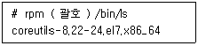
- -qi
- -ql
- -qa
- -qf
(정답률: 40%)
42. 다음은 tar에서 xz 명령어와 관련 있는 압축 옵션으로 알맞은 것은?
- -x
- -z
- -Z
- -J
(정답률: 66%)
43. 다음 중 BSD 계열 유닉스에서 사용하는 프린터 관련 명령으로 틀린 것은?
- lp
- lpr
- lpq
- lprm
(정답률: 66%)
44. 다음 중 사운드카드 사용과 관련된 프로그램으로 알맞은 것은?
- ALSA
- CUPS
- SANE
- LPRng
(정답률: 83%)
45. 다음 중 프린트 작업을 요청하는 명령어로 알맞은 것은?
- cancel
- lpr
- lpq
- lpstat
(정답률: 73%)
46. 다음 중 LVM 구성 순서로 알맞은 것은?
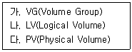
- 가 → 나 → 다
- 다 → 나 → 가
- 다 → 가 → 나
- 가 → 다 → 나
(정답률: 79%)
47. 다음 중 LVM에 대한 설명으로 틀린 것은?
- 물리적 디스크 2개를 이용해서 하나의 파티션으로 구성할 수 있다.
- 파티션의 크기를 확장해도 데이터의 손실이 발생하지 않는다.
- 파티션의 크기를 축소해서 데이터의 손실이 발생하지 않는다.
- 물리적 디스크 1개를 이용해서 두 개의 파티션을 구성할 수 있다.
(정답률: 70%)
48. 다음 중 RAID로 구성된 하드 디스크 중에서 하나의 디스크에 오류가 발생해도 데이터의 손실이 없는 조합으로 알맞은 것은?
- RAID-0, RAID-1
- RAID-0, RAID-5
- RAID-1, RAID-5
- RAID-0, RAID-6
(정답률: 79%)
2과목: 리눅스 활용
49. 다음은 부팅 모드를 확인하는 과정이다. X 윈도 모드로 부팅이 될 때 (괄호) 안에 들어갈 내용으로 알맞은 것은?
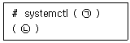
- ㉠ set-default ㉡ multi-user.target
- ㉠ set-default ㉡ graphical.target
- ㉠ get-default ㉡ multi-user.target
- ㉠ get-default ㉡ graphical.target
(정답률: 47%)
50. 다음 중 X Window 시스템에 할당된 TCP 포트 번호로 알맞은 것은?
- 6000
- 8000
- 8080
- 8088
(정답률: 62%)
51. 다음 설명에 해당하는 라이브러리 명칭으로 알맞은 것은?
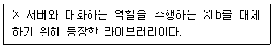
- XCB
- QT
- GTK+
- FLTK
(정답률: 73%)
52. 다음 설명에 해당하는 명칭으로 알맞은 것은?
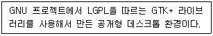
- QT
- KDE
- GNOME
- Xfce
(정답률: 73%)
53. 다음 상황과 관련된 설명으로 알맞은 것은?
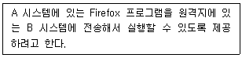
- A 시스템은 X 서버가 되고, 환경변수인 DISPLAY를 변경한다.
- A 시스템은 X 클라이언트가 되고, xhost 명령을 사용해서 제어한다.
- B 시스템은 X 클라이언트가 되고, 환경변수인 DISPLAY를 변경한다.
- B 시스템은 X 서버가 되고, xhost 명령을 사용해서 제어한다.
(정답률: 44%)
54. 다음 결과에 해당하는 명령으로 알맞은 것은?
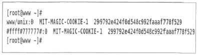
- echo $DISPLAY
- xhost list $DISPLAY
- xauth list $DISPLAY
- export DISPLAY
(정답률: 58%)
55. 다음 그림에 해당하는 프로그램으로 알맞은 것은?
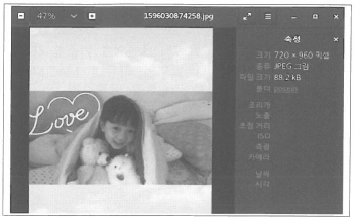
- totem
- ImageMagicK
- Eog
- Gimp
(정답률: 67%)
56. 다음 그림에 해당하는 프로그램으로 알맞은 것은?
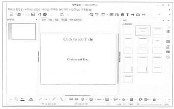
- LibreOffice Draw
- LibreOfiice Writer
- LibreOffice Calc
- LibreOffice Impress
(정답률: 78%)
57. 다음 설명에 해당하는 LAN 구성 방식으로 알맞은 것은?
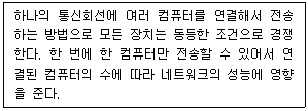
- 망(Mesh)형
- 링(Ring)형
- 버스(Bus)형
- 스타(Star)형
(정답률: 72%)
58. 다음 (괄호) 안에 들어갈 내용으로 알맞은 것은?
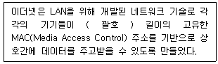
- 32bit
- 48bit
- 64bit
- 128bit
(정답률: 67%)
59. 다음 중 패킷 교환 방식에 대한 설명으로 틀린 것은?
- 패킷별로 우선순위를 부여할 수 있다.
- 회선 교환 방식과 비교해서 지연이 적게 발생한다.
- 각각의 패킷마다 오버헤드 비트가 존재한다.
- 고정 대역을 할당하지 않는 관계로 이론상으로는 무제한 수용이 가능하다.
(정답률: 62%)
60. 다음 설명에 해당하는 기술로 알맞은 것은?
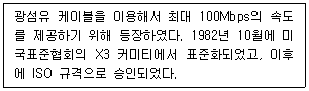
- FDDI
- X.25
- Frame Relay
- Cell Relay
(정답률: 71%)
61. 다음 중 프로토콜 제정기관과 관련 업무의 조합으로 알맞은 것은?
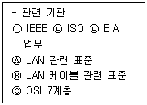
- ㉠ - Ⓒ
- ㉡ - Ⓐ
- ㉠ - Ⓑ
- ㉢ - Ⓑ
(정답률: 66%)
62. 다음 설명에 해당하는 OSI 계층으로 알맞은 것은?
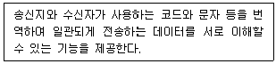
- 표현 계층
- 세션 계층
- 전송 계층
- 네트워크 계층
(정답률: 72%)
63. 다음 중 IPv4의 B 클래스 네트워크 주소 대역으로 알맞은 것은?
- 127.0.0.0 ~ 192.255.255.255
- 127.0.0.0 ~ 191.255.255.255
- 128.0.0.0 ~ 192.255.255.255
- 128.0.0.0 ~ 191.255.255.255
(정답률: 59%)
64. 다음 중 X 윈도가 설치되지 않은 환경의 콘솔 창에서 이용할 수 있는 웹 브라우저로 알맞은 것은?
- lynx
- chrome
- opera
- safari
(정답률: 78%)
65. 다음 설명에 해당하는 인터넷 서비스로 알맞은 것은?
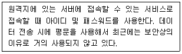
- SSH
- Telnet
- Gopher
- FTP
(정답률: 76%)
66. 다음 (괄호) 안에 들어갈 내용으로 알맞은 것은?
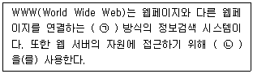
- ㉠ HTML ㉡ URL
- ㉠ HTML ㉡ 하이퍼텍스트
- ㉠ 하이퍼텍스트 ㉡ HTML
- ㉠ 하이퍼텍스트 ㉡ URL
(정답률: 68%)
67. 다음 중 CentOS 7 시스템을 텔넷 서버로 사용하기 위해 설치해야 하는 패키지명으로 알맞은 것은?
- telnet
- telnet_server
- telnet-server
- server-telnet
(정답률: 70%)
68. 다음은 원격지 SSH 서버에 계정을 변경해서 접속하는 과정이다. (괄호) 안에 들어갈 옵션으로 알맞은 것은?
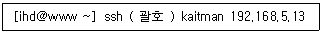
- -l
- -n
- -p
- -x
(정답률: 64%)
69. 다음 중 FTP 서버에 있는 파일을 로컬 시스템으로 가져올 때 사용하는 명령어로 알맞은 것은?
- get
- put
- send
- hash
(정답률: 82%)
70. 다음 조건일 때 설정되는 게이트웨이 주소 값으로 가장 알맞은 것은?
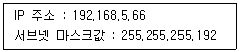
- 192.168.5.126
- 192.168.5.127
- 192.168.5.128
- 192.168.5.129
(정답률: 41%)
71. 다음 중 게이트웨이 주소 정보를 출력하는 명령으로 알맞은 것은?
- ip gw show
- ip gateway show
- ip route show
- ip add show
(정답률: 68%)
72. 다음 중 시스템에 장착된 이더넷 카드의 MAC 주소를 확인하는 명령으로 알맞은 것은?
- ip
- route
- mii-tool
- ethtool
(정답률: 40%)
73. 다음 정보를 확인할 수 있는 파일로 알맞은 것은?
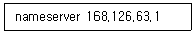
- /etc/hosts
- /etc/named.conf
- /etc/resolv.conf
- /etc/sysconfig/network
(정답률: 58%)
74. 다음 설명에 해당하는 파일명으로 알맞은 것은?
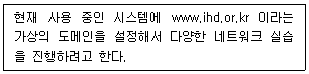
- /etc/hosts
- /etc/resolv.conf
- /etc/sysconfig/network
- /etc/sysconfig/network-scripts
(정답률: 53%)
75. 다음 중 SYN Flooding 공격과 같은 네트워크 상태 정보를 확인하는 명령으로 알맞은 것은?
- ip
- ss
- arp
- ethtool
(정답률: 57%)
76. 다음 중 IPv4 네트워크 주소 체계에서 '/16'이 의미하는 서브넷 마스크값으로 알맞은 것은?
- 255.0.0.0
- 255.255.0.0
- 255.255.255.0
- 255.255.255.128
(정답률: 75%)
77. 다음 그림에 해당하는 기술로 가장 알맞은 것은?
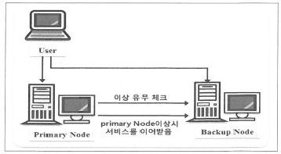
- 임베디드 시스템
- 베어울프 클러스터
- 고가용성 클러스터
- 부하분산 클러스터
(정답률: 76%)
78. 다음 설명에 해당하는 가상화 기술로 알맞은 것은?
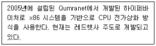
- Xen
- KVM
- Docker
- VirtualBox
(정답률: 72%)
79. 다음 설명에 해당하는 프로그램으로 알맞은 것은?
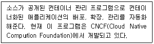
- Docker
- OpenStack
- Kubernetes
- Ansible
(정답률: 59%)
80. 다음 설명에 프로그램으로 가장 알맞은 것은?
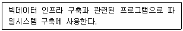
- Hadoop
- NoSQL
- R
- Cassandra
(정답률: 65%)
스티키 비트는 리눅스 특수 권한 중 하나로, 보통 공용 디렉터리(예: /tmp)에 사용됩니다.
이 권한은 기타 사용자(Other)의 실행 권한 자리에 t를 설정하여 활성화합니다.
따라서 o(Other)에 t(Sticky Bit)를 추가하는 ④ [chmod o+t /project]가 정답입니다.
---
무조건 챙겨야 하는 문제로, 리눅스 마스터 시험에서 가장 빈출되는 '특수 권한 3대장' 중 하나입니다.
* SetUID (s): 실행 시 파일 소유자의 권한으로 실행 (보안상 매우 중요)
* SetGID (s): 실행 시 그룹의 권한으로 실행 (협업 디렉터리 등)
* Sticky Bit (t): 게시판 같은 개념. 글(파일)은 누구나 쓰지만, 삭제는 쓴 사람만 가능.
시험에서는 이 3가지를 구분하는 문제, 혹은 chmod 1777 처럼 숫자로 권한을 주는 문제가 자주 나오니 꼭 외워두는 게 좋습니다.